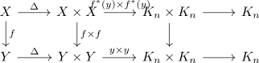
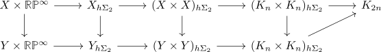

naturality of the steenrod operation
Proposition
Let $X,Y$ be topological spaces, $x \in H^n(X; \mathbb{Z}/2 \mathbb{Z}), y \in H^n(Y,\mathbb{Z}/2 \mathbb{Z})$ such that
\begin{align*}
x = f^*(y)
\end{align*}
for some continuous map $f: X \rightarrow Y$.
Then the $i$ steenrod operation is natural with respect to $f$
\begin{align*}
\mathrm{Sq}^i(f^*(y)) = f^*(\mathrm{Sq}^i(y)
\end{align*}
Proof
consider the diagrams

which commute up to homotopy
Then applying the <homotopy $\sigma_2$ orbits> gives

Thus